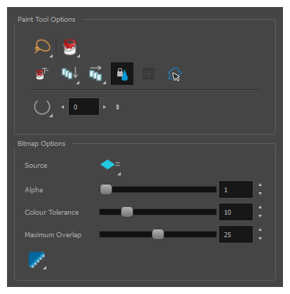
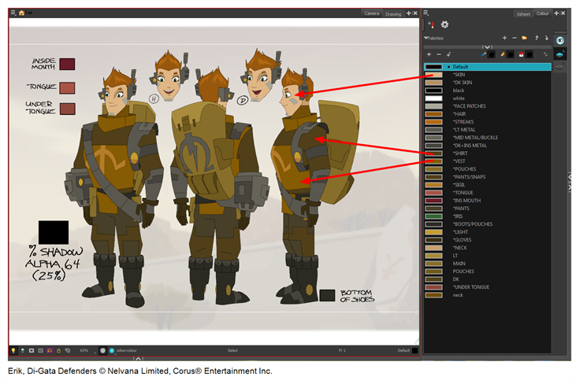
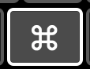
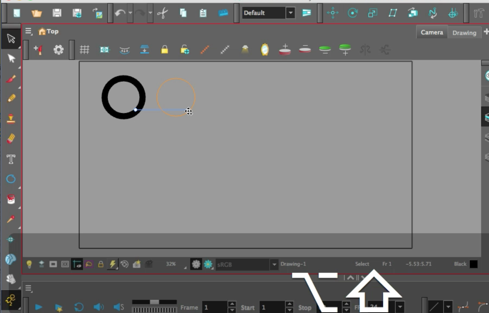
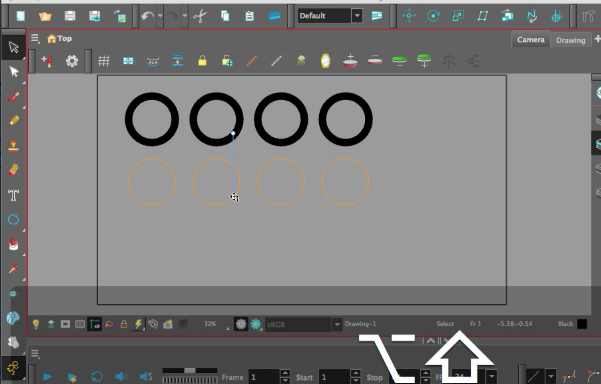
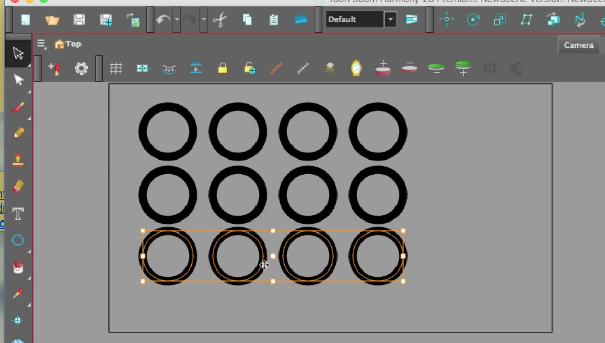
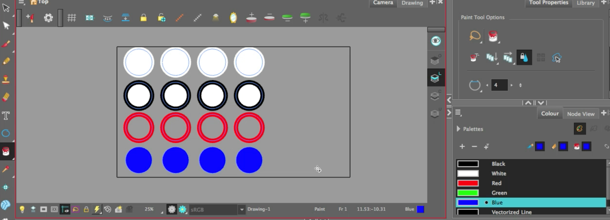
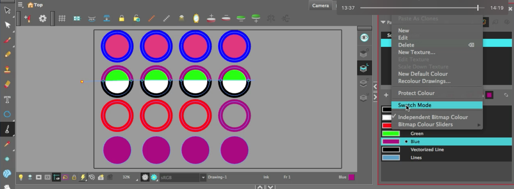
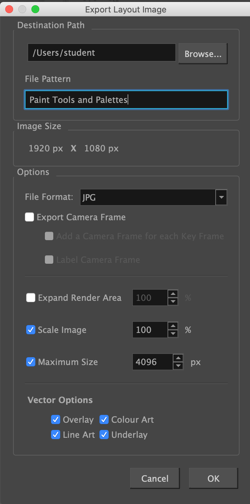

About this Lesson:
What is colour theory? Simply put; it is the logical understanding and application of colour. Colour theory encompasses many different aspects of colour including colour wheels, colour anatomy, colour schemes and more. Understanding colour theory can improve the quality and appeal of things like character designs and backgrounds. This is an introduction to a few of the most basic principles found in colour theory. In this lesson you will now learn about Paint Tools, Palettes and how to create then use colour. We are going to experiment with several different ways to paint strokes and fills in Harmony. You will also learn how to create and work with swatches and palettes. You will need to undo your work often and try different approaches. This lesson requires you to review the attached Colour Theory PDF and to complete the task.
Lesson Duration: 2 hours
Topics:
Review the PDF document for definitions
- Colour Anatomy:
- Hue
- Value
- Chroma
- Temperature
- Colour Wheels:
- Standard
- Primary Colours
- Secondary Colours
- Yurmby Colour Wheel
- Colour Schemes:
- Monochromatic
- Complementary
- Analogous
- Colour Spaces:
- RGB and HSV
- Colour Profiles:
- RGB Colour
- CMYK Colour
Harmony Topics:
- Colour View: The Colour view is where you create colours and palettes and import existing palettes into your project. The Colour view is also necessary for drawing, painting and creating colour styling.

- Paint tool: The Paint tool allows you to fill closed areas of your drawing with the selected colour. In the Tools toolbar, select the Paint, Paint Unpainted, Repaint or Unpaint tool. The tool's properties are displayed in the Tool Properties view.

- Paint/Paint Unpainted: The Paint Unpainted Selection command is used to paint any closed spaces that have no fill. This can be done simply by drawing a selection over the artwork (lasso or marquee). The Paint Unpainted tool will fill in any areas that do not have a colour or fill assigned to it, and it will leave the rest as is. This is very helpful when the areas that aren't filled need to be the same colour, but there are a lot of them to fill.
- Paint/Repaint: You can repaint lines, zones, and brush strokes using the Repaint tool. The Repaint tool does not fill empty zones, even if they are closed. The Repaint Selection command is used to repaint any art inside a selection. You must first draw a selection using the Select tool in order for this command to be available. You can also click on the colour swatch in the colour palette to automatically repaint your selection. The Repaint Selection On All Drawings command is used to repaint any art inside a selection on all the drawings contained within the same layer. You must enable the Permanent Selection option in the Select tool Tool Properties view and then select an area of your drawing using the Select tool in order for this command to be available. The Permanent Selection option lets you maintain the same selection throughout the drawings on the same layer.
- Paint/Unpaint: The Unpaint tool simply unpaints a section of the artwork by removing the fill. The Unpaint Selection command is used to unpaint any art existing inside a selection. You must first draw a selection using the Select tool in order for this command to be available. The Unpaint Selection on All Drawings command is used to unpaint all art contained inside a selection on all the drawings within the same layer. You must enable the Permanent Selection option in the Select tool Tool Properties view and then select an area of your drawing using the Select tool in order for this command to be available. The Permanent Selection option lets you maintain the same selection throughout the drawings on the same layer.
- Palette: A colour palette is an actual file on the hard drive. In animation, specific colours are used to paint each part of each character. In order to maintain absolute consistency, a base colour palette should be created for each character, prop and effect in the production. This is referred to as a master palette. Master palettes contain a colour swatch for each area to colour. Each swatch stores a colour in precise levels of red, green, blue and opacity (which is also referred to as alpha).

- Swatch: You can use several different types of colour swatches, including solid colour, gradient colour and bitmap texture swatches. In Toon Boom Harmony Premium, when you add a swatch, it is created using the colour of the currently selected swatch from your palette. However, you can set a default colour to be used every time you create a new colour in your colour palette. This is useful for creating different shades of the same basic colour.
- Texture Palette: Creating a pencil texture palette allows you to manage your own pencil textures as you wish. You can create separate pencil texture palettes for different characters, props and backgrounds as needed, and share them among the people collaborating on your project like you would with colour palettes. Creating a pencil texture palette is as simple as creating a colour palette. When creating a palette, you have the option to create it as a colour or a pencil texture palette.
Shortcuts Presented in this lesson:

CMD+A (macOS) or CTRL+A (Windows) = Select All
CTRL+A (Windows) = Select AllK = Toggles View Strokes on and off
Task:
-
Download the Colour Theory PDF in the Lesson Files. Review the document and take notes.
-
Watch and take notes on the Paint Tools and Palettes video (above) and the topics presented in this lesson.
-
Create your own colour circle task in Harmony by following the steps presented in the video. Be sure to save and export your Harmony file as: YourName_colour in your Documents folder. Please submit your animated video using the Submit File section on the bottom of this page. Be sure to continue to take notes in your sketchbook/notebook on how to use Harmony and any animation terminology as it will help you prepare for your certification exam at the end of this course.
-
Launch Toon Boom Harmony.
-
In the Welcome Window, create a new scene called: 'Colour'.
-
Browse and set the location to your Document Folder.
-
Keep the Camera Size at the default HDTV_1080p24 1080p (1920 by 1080 pixels and the frame rate is 24 frames per second).
-
Click Create Scene.
-
Create a layer and name it 'Circles'.
-
Use the Ellipse tool, select the black swatch and draw a circle on the top left of the camera view.
-
Select the circle artwork with the Select tool, hold the Option key (macOS) or Alt (Windows), and drag and drop a new drawing of your circle to the left of the existing circle. Now select both circles, hold the Option key (macOS) or Alt (Windows), and drag and drop 2 new drawings of your circle to the left. You should now have 4 circles in a row.
-
Now select the row of 4 circles, hold the Option key (macOS) or Alt (Windows), and drag and drop 4 new drawings of your circles under the current row.
-
Repeat until you have 4 rows of 4 circles.
|
 |
 |
 |
-
Position the 4 rows of circles in the Camera View.
-
Select the Paint Tool.
-
In the Colour View, select the White swatch.
-
Click the Paint tool in the middle of the circles in the first row.
-
Undo your paint fill.
-
This time drag your cursor across the first row of circles. All the circles will turn white, including the black stroke.
-
Now go to Tool Properties and open the drop down menu for Paint, Select Paint Unpainted.
-
Now drag your cursor across the second row. This time your circles will have black strokes with white fills.
-
Go back to Tool Properties and open the drop down menu for Paint, select Repaint.
-
Select the red colour swatch.
-
Now drag your cursor across the third row. This time the black strokes of your circles will turn red and the fills will empty.
-
Go back to Tool Properties and open the drop down menu for Paint, Select Unpaint.
-
Drag your cursor across the fourth row. This time the black strokes of your circles will disappear. But the strokes of the circles are still there, therefore the circle shapes are still there. Click the letter K on your keyboard to view Strokes. You should be able to see all the strokes (blue) in the Camera view.
-
Select the blue colour swatch. Go back to Tool Properties and open the drop down menu for Paint, select Paint.
- Drag your cursor across the fourth row again. This time your circles (stroke and fills) will be blue.

- Go to and select Paint/Ink tool in the toolbar. The Ink tool only applies colour to the stroke.
- Select the blue swatch and apply the ink to the black strokes of your circles.
- Go to and select Paint/Stroke tool in the toolbar. Stroke will draw an invisible line on the art.
- Go to View/Show/Show Strokes or click K on your keyboard.
- Select the Paint tool and select the green swatch.
- Paint the top part of the circles (above the stroke you drew) green.
- Go to Colour View.
- Expand the Colour View.
- Select the black swatch and click Add Colour, which is the + symbol. This will duplicate the colour swatch you had selected in the Palette view.
- The Colour Picker View will open.
- Select a new colour and name it 'Lines'.
Note you can change the transparency of the colour swatch by reducing the Alpha number. You can also create linear or radial gradient swatches in the Colour Picker as seen in the Principles of Animation Lesson.
- Close the Colour Picker and look at the Colour View. You should see your new Line colour swatches.
- Expand the Palettes section. Note there is a Scene Palette selected.
- Select New Palette by selecting the + symbol next to the word Palette.
- Create a Row 1 Palette, keep Palette Type as colour and click Ok.
- Add 4 additional colour swatches using the Colour Picker in the row 1 palette. Use the Eyedropper in the Colour Picker to select any colour on your screen. Name the colours appropriately. Keep one swatch the same as the blue swatch from the existing palette.
- Use the Ink tool to apply the new row palette blue swatch to the first row of circle strokes.
- Go back to the NewScene palette. Change the blue swatch to the colour purple. Notice that all circles with blue will change colour except the top row.

Note that you can dynamically update existing colours already applied on your camera view by changing the colour of the original colour swatch in the Colour view. For example, if you change the blue swatch to teal, the blue applied in Camera view will also change to teal. This will apply to all instances of the colour on all frames. It is good practice to make Palettes for different characters and background designs in Harmony.
- Toggle the Colour Swatches to Swatch Mode which will change the visual layout of the swatches.
- Time to export your art as an image. Go to File/Export/Layout Image. Select your Document folder as the destination location. Name the file Paint Tools and Palettes. Select jpg as the File Format.
- Take a screenshot demonstrating the following:
- Your new palette in Colour View
- Colour Swatches
- Circle artwork in Camera View (with Colour palette applied)
- Submit both the exported image and screenshot.
